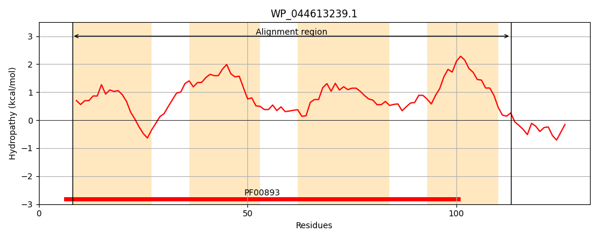
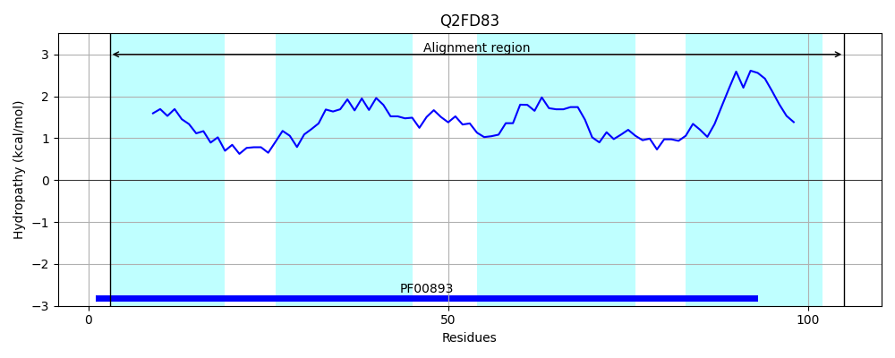
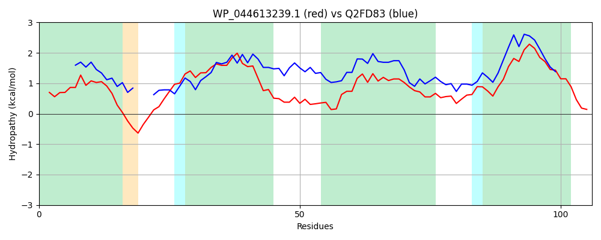

Hit Accession: Q2FD83
Hit TCID: 2.A.7.1.11
Hit Description: gnl|BL_ORD_ID|13214 gnl|TC-DB|Q2FD83|2.A.7.1.11 QacEdelta1 SMR family efflux pump OS=Acinetobacter baumannii GN=qacEdelta1 PE=3 SV=1
Mach Len: 106
e:0.000000
Query TMS Count : 4
Hit TMS Count: 4
TMS-Overlap Score: 3.350000
Predicted Substrates:CHEBI:3020;benzalkonium chloride, CHEBI:383703;3,6-diamino-10-methylacridinium chloride, CHEBI:4883;ethidium bromide, CHEBI:8984;sodium dodecyl sulfate, CHEBI:23614;deoxycholate, CHEBI:9532;thiamine(1+) diphosphate, CHEBI:87346;acridine orange free base, CHEBI:3603;chloramphenicol, CHEBI:7644;novobiocin, CHEBI:7565;nifedipine, CHEBI:4841;erythromycin A
BLAST Alignment:
| Protein Hydropathy Plots: | |
|---|---|
|  |  |
Pairwise Alignment-Hydropathy Plot: | |
|  | |